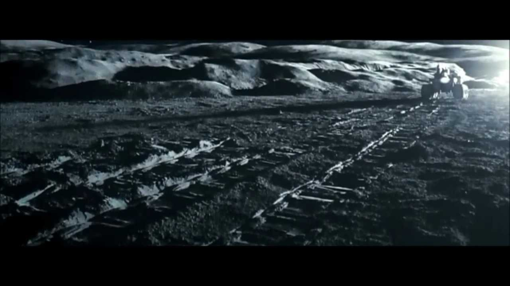

The Parvati System
This is the star system where the Terran Borderlands campaign began. Astrogation maps call the system by the formal name Gliese 408, but it’s commonly known as “The Parvati System” after the name of the moon that houses the starport. That moon is formally “Gliese 408 c-4”. That means it is the 4th charted moon (the “-4”) of the 3rd charted planet (“c”) in the Gliese 408 system.
Universal World Profile
Here is the official UWP for Parvati:
Parvati D400485-A, Temperate (Gliese 408 c-4 M3V, United Terran Republic)
So what does that all mean?
- The system has a Class D starport. That means “Poor”, only unrefined fuel is available, there are no facilities for annual maintenance, no shipyard, and maybe a scout base.
- It has 0.35g of gravity (6400 km radius). This is considered a low gravity world, meaning all skill checks are at -1 until the character acclimatizes (1D weeks, waived if you have Zero-G skill).
- There is no atmosphere and no water.
- Population in the tens of thousands.
- Government is Civil Service Bureaucracy.
- Law level is 5 (medium), meaning no WMD, no portable energy weapons, no heavy weapons, no light assault weapons, no SMGs, and no personal concealable weapons. So you can own and carry blades, stunners, and single shot long guns.
- Tech level is A (10).
- Somehow, the world is considered “temperate” since it would be habitable if it had a breathable atmosphere.
- The star is type M3V, meaning cool, main-sequence
- There are no bases here.
- There are gas giants.
- Trade classification: Non-industrial, Vacuum
- Allegiance: United Terran Republic
- c-4: This means Parvati is the 4th moon of the 2nd planet to be charted by humans in this system.
- The actual real-world Gliese 408, in case you’re curious: https://en.wikipedia.org/wiki/Gliese_408
Background
From TSAO:
During the early War, Parvati was a secondary waystation in the “Cicek Run” from Terra to Fei Lian. In later stages of the War, however, Rudra eclipsed Parvati as a transit station, and the local starport fell into disuse. The current population engages in small-scale mining operations, exporting raw ore to Cicek space. This remote world, however, makes an ideal hiding spot for pirates and smugglers, as naval presence amounts to monthly visits by a Patrol Frigate and much rarer “showing of the flag” by a Light Cruiser. While this illegal activity hardly reaches that of Lindworm, Parvati is still a hotbed for interstellar outlawry and all sorts of illicit trade with the anarchic Cicek.
From Signal 99:
The Parvati system has four planets, three of them inside the Jump Shadow of the main star. Himavan (Gliese 408) has a Jump Shadow (100D limit) of 59.8 million kilometers. Mena, a gas giant slightly larger and more massive than Jupiter, has its own Jump Shadow of 14.5 million kilometers. Mena is the only planet in the habitable zone of this star; thus, any ship jumping into the system must travel a minimum of 45 million kilometers to clear all Jump Shadows. Parvati is the fourth of five large moons orbiting Mena. The current orbital configuration finds Parvati 47 million kilometers from the closest limit of the Jump Shadow.
System Details
| Orbit | Common Name | UPP | Description | Notes |
|---|---|---|---|---|
| Himavan | M3V | Red Dwarf Star (Gliese 408) | ||
| a | Ragini | Gas Giant | Small gas giant, torch orbit | |
| b | Ganga | X510000-0 | Volcanic world | |
| b-1 | Jahnavi | E200000-0 | Rocky world, abandoned mining outpost | |
| c | Mena | Gas giant | Large, banded, blue-green gas giant | |
| c-1 | Uma | X000000-0 | Volcanic world | |
| c-2 | Aparna | E200000-0 | Abandoned mining outpost | |
| c-3 | Nagajaa | E210318-A | Low Population, Vacuum, Temperate, Mining Outpost | location described in supplement Moon |
| c-4 | Parvati | D400485-A | Non-industrial, Vacuum, Temperate | rocky moon of Gliese 408c with lucrative ore deposits and the system's only official starport |
| c-5 | Durga | X100000-0 | Rocky world | |
| d | Minavati | Gas giant | Large, yellow-orange, banded, gas giant with ring | |
| d-1 | (ring) | X000000-0 | Icy Ring | |
| d-2 | Mahabharata | X101000-0 | Icy world | |
| d-3 | Yudhishthira | X201000-0 | Icy world | |
| d-4 | Pandavas | X000000-0 | Icy world | |
| d-5 | Draupadi | X000000-0 | Icy world | |
| e | Vishvamitra | Gas Giant | Medium, purple gas giant | |
| e-1 | Advaita | |||
| e-2 | Arvabhata | |||
| f | Indra | Gas Giant | Medium, orange, stormy gas giant with ring | |
| f-1 | (ring) | X000000-0 | Icy/Rocky Ring | Includes moonlet GX4825 and the wreck of Tallmadge's Splendor |
| f-2 | Lalla | |||
| f-3 | Kalpana | |||
| f-4 | Varahamihira | |||
| g | Brahmagupta | X3132000-0 | Ice-capped, Barren | rumored to hold Reticulan base |
Points of Interest
Mena (Gliese 408 c)
Mena is a large, banded, blue-green gas giant. It has 5 moons, and is suitable for unrefined fueling of starships that are properly equipped.
Nagajaa (Gliese 408 c-3)
Nagajaa is formally known as Gliese 408 c-3. It is a sister moon to Parvati.
[Note: This contradicts what Signal 99 says about Gliese 408 c-3.]
In my universe, Nagajaa is the moon described in the Cepheus Engine supplement Moon.
Parvati (Gliese 408 c4)
Parvati is a rocky moon of Mena with lucrative ore deposits, and home to the system’s only official starport.
For information about the starport and surrounding city, see here: Parvati Station

Minavati (Gliese 408 d)
Vishvamitra (Glies 408 e)
Indra (Gliese 408 f)
Indra is a medium, orange, stormy gas giant. It has 1 ring and 3 moons.
Currently [insert the in game date] there is a 400 ton lab ship in orbit of Indra, conducting long term study of the planet and its unusual electromagnetic emissions. It is the TLS (Terran Lab Ship) Nakatomi.
The Ring (Gliese 408 f-1)
Gliese 408 f-1 is a ring of ice and rock. It includes a moonlet called GX4825, which is the location of the wreck of Tallmadge’s Splendor.
From TSAO:
Gliese 408f [called “Indra”] is an unremarkable gas giant with three moons orbiting far beyond its ring system. The ring is composed of ice and rock; 90% of the ring particles are less than 1m in diameter. Ring particles are composed of carbonaceous material, silicates, and frozen methane. The patron, Van Deussen, collects methane chunks but occasionally he will find hydrocarbons or more useful minerals. His theory is that the ring is the pulverized remains of a small moon that was struck by a stellar wanderer.
Like all rings, this one is much denser than an asteroid field. However, the ring is only 100m thick at its thickest points. The ship will have to fly above or below the disk of the ring to reach the wreck, and the final approach to the wreck will almost assuredly involve some collisions.
Tallmadge’s Splendor, or simply the Splendor, lies on one of the largest bodies in the bright outer edge of the ring, close to, but short of the distance at which particles could gather themselves into a proto-moon. The rock’s relative size does draw smaller particles towards it, but the gravity effect of the gas giant also pulls particles away. The ring arc is active and dangerous as a result; particles move about and collide.
The Rock (GX4825)
From TSAO:
GX4825, technically a “moonlet” of Gliese 408f but too insignificant in size to be counted as such in any astronomical document, is a cold tiny lump of rock and dirty methane ice. UWP is 000000-0. The rock is 0.3 km by 0.9 km by 0.4 km. Its surface gravity is well below 0.01G.
This moonlet is the final resting place of Tallmadge’s Splendor, a Shaka-class military transport ship.